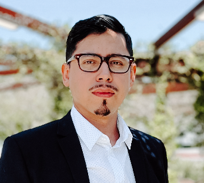

Mario Martinez

Summary
Detail-oriented Web Developer with a strong foundation in creating responsive and user-friendly websites. Complemented by a background in graphic design, enabling a holistic approach to web aesthetics and functionality. Experienced in collaborating with cross-functional teams to drive project success. Passionate about merging design principles with coding expertise to deliver seamless digital experiences.
Work Experience
-
Founder - No Marz Design
January 2023 - Present
- Designed, developed, and launched responsive websites tailored to client needs using the Webflow platform.
- Created a diverse range of graphics including logos, banners, and marketing materials, aligning with brand guidelines.
- Edited and produced a variety of multimedia content, from promotional videos to podcasts, ensuring clear and high-quality output.
Skills
- Graphic Design
- Web Design & Development
- Project Managment
Certifications
- HubSpot Solution Provider
- Talkdesk Administrator
Other